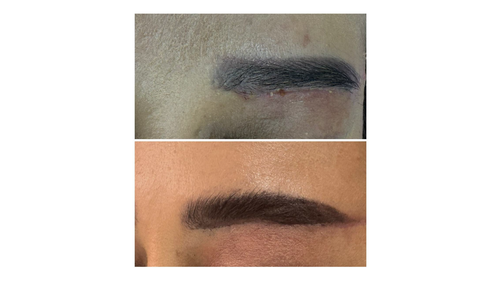

Результаты
Natijalar
Воздействие на кожные раны
Teridagi yaraga ta’siri


Воздействие на обожжённую кожу
Kuygan teridagi natija
Воздействие на открытую рану
Ochik jarohatdagi natija
Воздействие на рану при сахарном диабете
Qandli diabetdan keyingi yaradagi natija
Воздействие на раны после ампутации
Amputatsiyadan keyingi jarohatdagi natija
Воздействие на стрии на коже
Teridagi striyaga ta’siri
Реабилитация после операции
Jarohlik amaliyotidan keyingi tiklanish
Воздействие на пролежни
Yotoq yaraga ta'siri